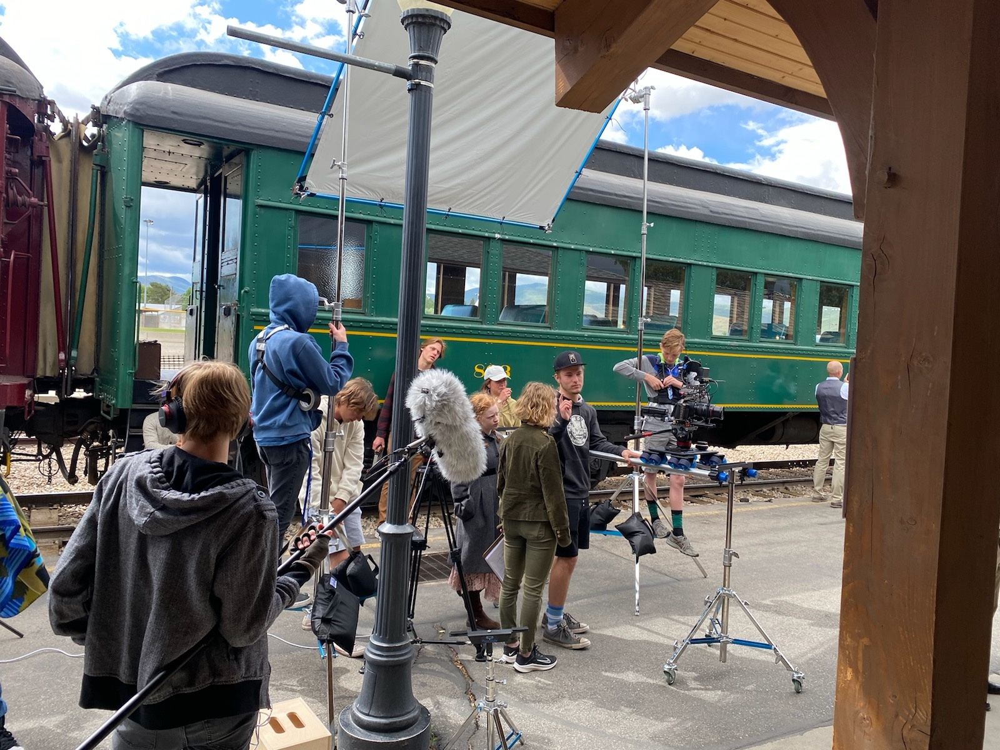
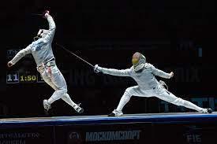

Skills and Talents
I have worked on profesional films and hope to do so as a career in the future. I have been flown out of state to work on some, I have produced some and have met some very famous people who are the best mentors.

I also am a epee fencer, but i can do foil as well. I really enjoy fencing, it is a great sport, and if i were to rate myself, id give me a 8.5/10 in general. fencing also makes me fit, i wake up at 5 every day to practice my form and techneiqe.

I am trilingual, spanish, english, and I can speak latin. I have been a boom op, mixerr, director, producer, writer, 1st ad, 2nd ad, dp, pa, and practically everything. Crafty, Grip included.
I balance, I weave, I dodge, I frolic, and my bills are all paid. On weekends, to let off steam, I participate in whipped cream battles. Years ago I discovered the meaning of life but forgot to write it down. I have made extraordinary four-course meals using only a crab and a toaster oven. I breed prizewinning clams. I have won bullfights in San Juan, cliff-diving competitions in Sri Lanka, and spelling bees at the Kremlin. I have played Hamlet, I have performed open-heart surgery, and I have spoken with Elvis.